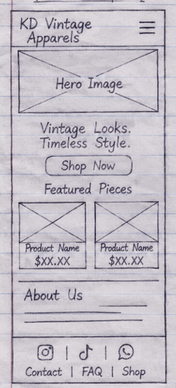
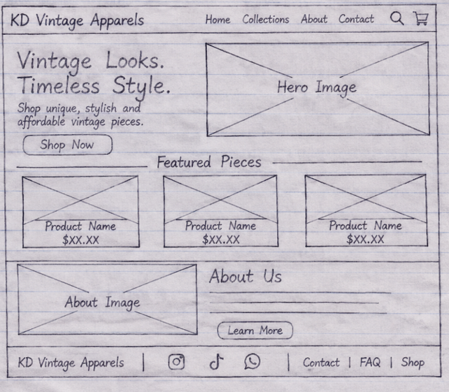

Site Name
KD Vintage Apparels
The name KD Vintage Apparels represents a clothing business that specializes in vintage and secondhand fashion. "KD" provides a recognizable brand identity, while "Vintage Apparels" communicates the type of products customers can expect to find.
Optional domain: kd-vintage.com
Site Purpose
The KD Vintage Apparels website will serve as an online storefront for a vintage clothing business. It will showcase available clothing pieces, provide product descriptions and prices, introduce the brand, and help customers discover and enquire about items they wish to purchase.
Scenarios
- What vintage clothing pieces are currently available?
- How much does each clothing item cost?
- How can I contact KD Vintage Apparels to purchase an item?
Color Scheme
The website will use a warm, vintage-inspired color palette to create a welcoming and stylish appearance.
- Vintage Cream (#F5EBDD): Used for the main background.
- Deep Espresso (#3B2520): Used for headings, navigation, and primary text.
- Terracotta (#A65E3B): Used for buttons, links, and decorative accents.
Typography
Playfair Display will be used for the brand name and headings to create an elegant, vintage-inspired appearance.
DM Sans will be used for body text, navigation, buttons, and product information because it is clean and easy to read.
Wireframes
These wireframes show the planned homepage layout for KD Vintage Apparels on mobile and desktop screen sizes.
Mobile View

Desktop View
